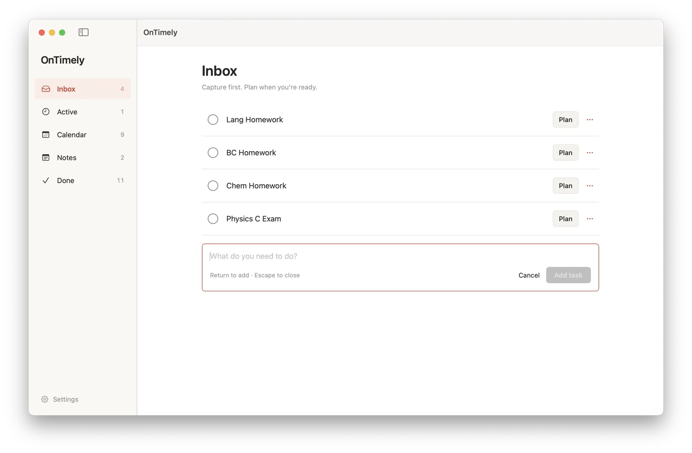
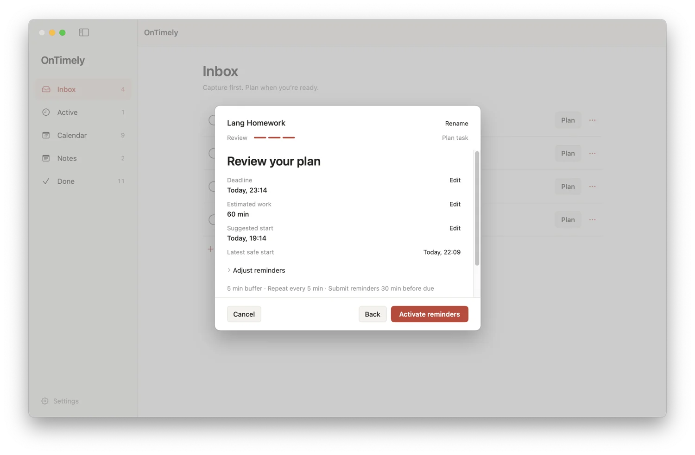

macOS app
OnTimely
A reminder app that helps you start tasks before their deadlines.

A deadline tells you when to finish. OnTimely also gives you a time to start.
Add a task, choose its deadline, and estimate how long it will take. Review the plan and turn on reminders when you’re ready. The app keeps track of work that’s active, finished, or still waiting in Inbox.
The interface follows that sequence: Inbox → Active → Done. Planning and reminder activation are separate steps, so collecting a task doesn’t immediately turn it into an interruption.
